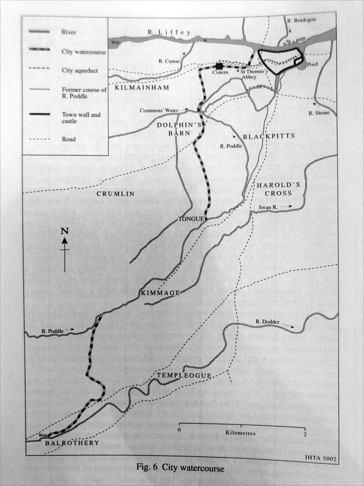
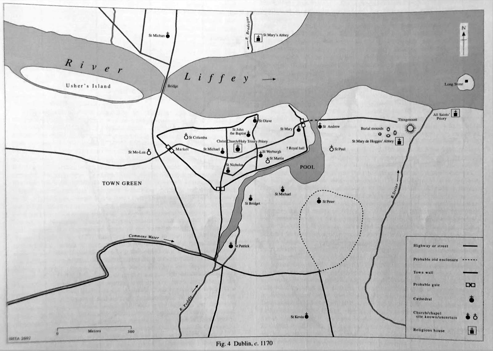

History · Before 1244
The first diversion
Turning the Dodder into the Poddle at Balrothery.
The first diversion
The first great change was the diversion of water from the Dodder into the Poddle at Balrothery Weir, by the monks of St Thomas’s Abbey, before 1244. It was a remarkable piece of engineering. Some 10km from their abbey, the monks dug a new channel that carried part of the Dodder’s flow for over 3km to join the Poddle.
They did it for two reasons. More water meant more power for their mills, and it gave them a larger and steadier supply of drinking water, which they stored in a cistern on what is now Thomas Street. The citizens enlarged the works in 1244, and the system ran for around 500 years.

